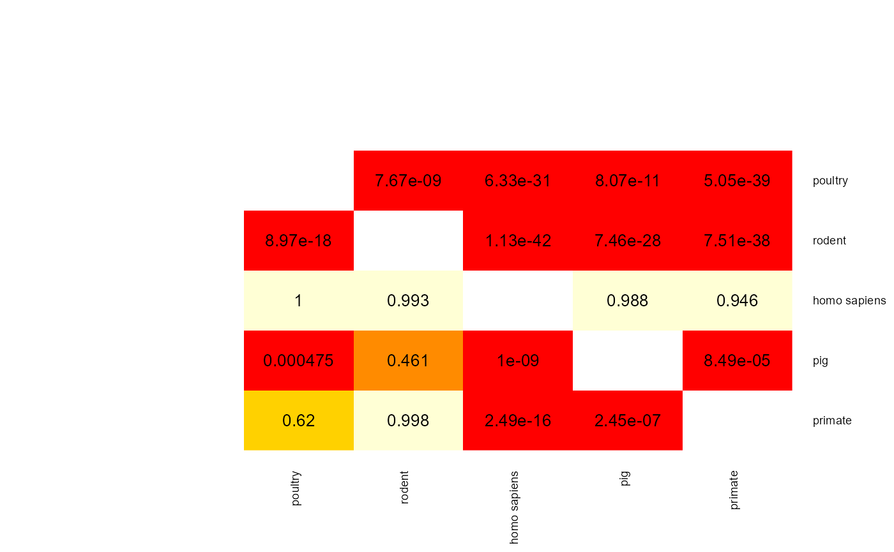
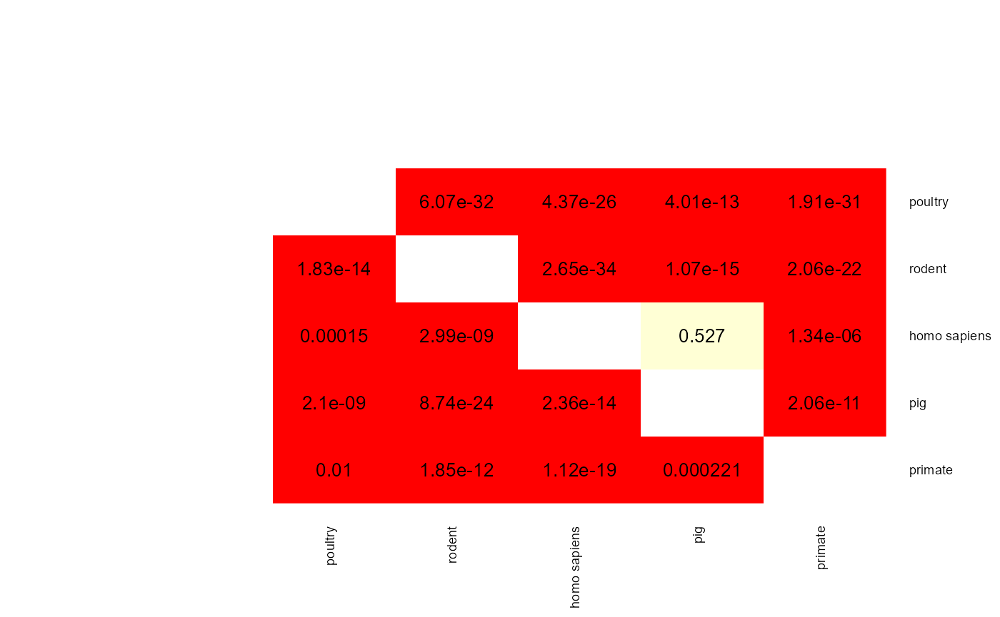
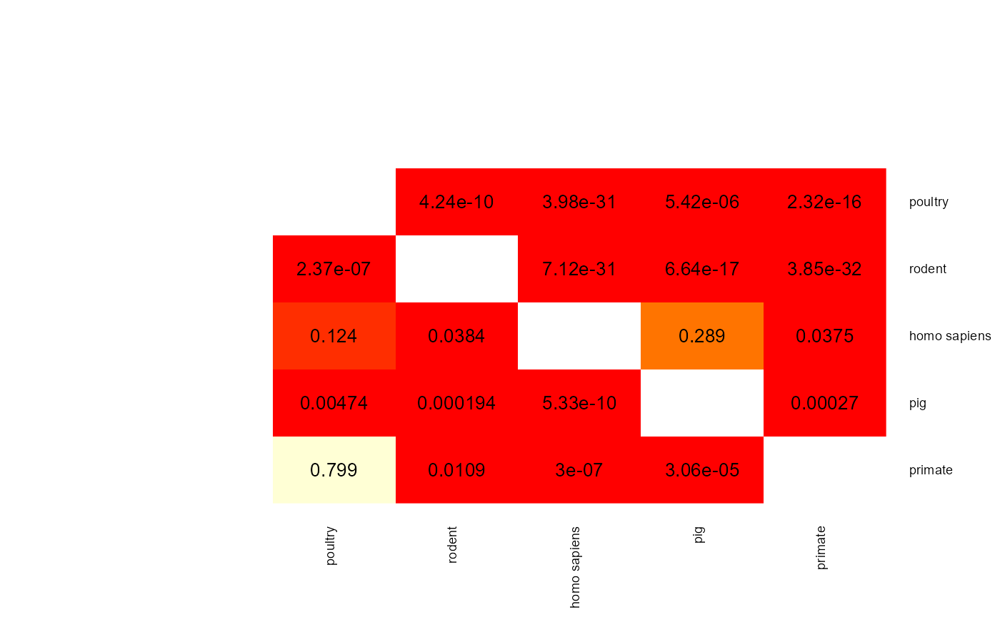
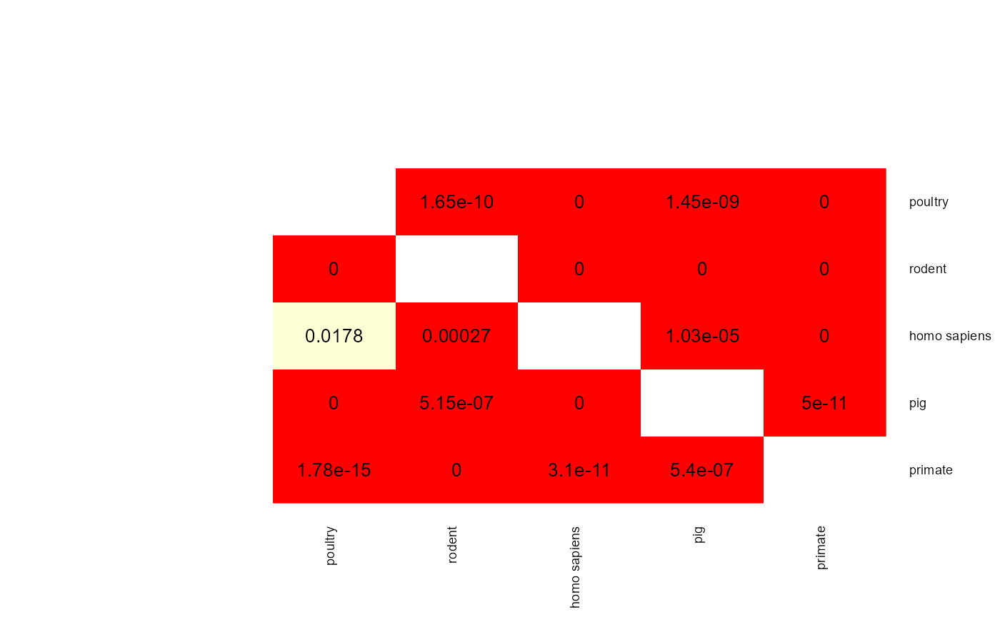
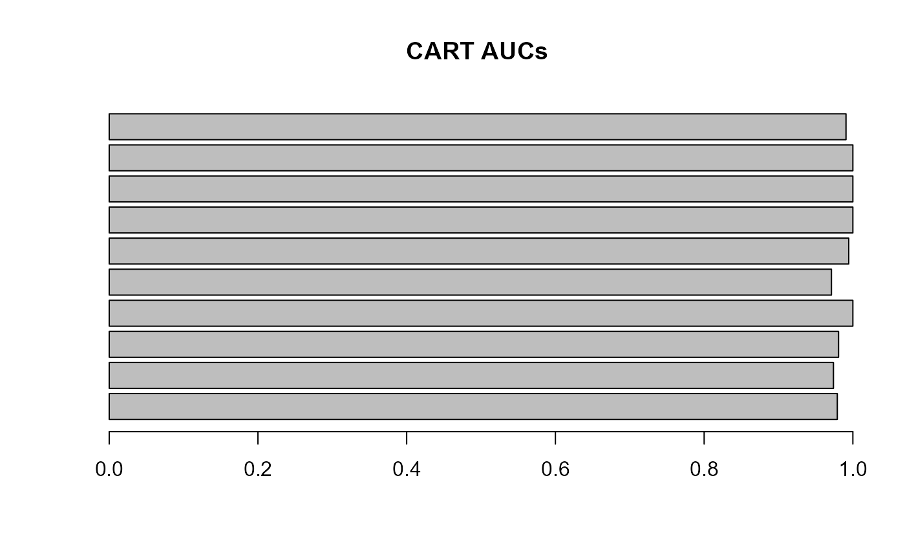

Introduction
Pangenome GWAS (panGWAS) is an analysis method that investigates the relationship between genes in species’ genofond and observable traits. PanGWAS relies on the construction of pangenomes and phylogenetic trees which are the main input into the analysis.
Objective
In this vignette you will be introduced to the most common use case of aurora package. You will try to find out if Limosilactobacillus reuteri is a host adapted species. To this end you will use an output from Panaroo (pangenome tool) run with 207 L. reuteri assemblies downloaded from NCBI and a core-genome phylogenetic tree constructed using IQ-TREE. In the end you will identify some of the genes that allow L. reuteri to colonize the rodent gastrointestinal tract.
Workflow
First, let’s install and attach all the packages we will need for this vignette.
Next let’s load all the data and also create the directory where the output will be stored.
save_dir <- "/path/to/your/dir/"
# this line will not be run because you do not want a vignette to create folders
#if (!dir.exists(save_dir)) {dir.create(save_dir)}
data("pheno_mat_reuteri") # loads the phenotype for each strain
data("bin_mat_reuteri") # loads the pangenome matrix
data("tree_reuteri") # loads the core-genome phylogenetic treeYou need to make sure that all strains in pheno_mat are
also in the bin_mat and in the tree. Additionally, the strain names
should contain only letters, numbers and special signs “”, ”.”. A
strain name cannot start with ”.” or ””. Now, the main
aurora function will be executed. This function does not do any
GWAS analysis. The only purpose of it is to find out if the species is
adapted to the supplied phenotype and find which strains are mislabelled
(allochthonous strains). If you don’t want to run it, you can skip this
step and run only aurora_GWAS().
The L. reuteri is a medium-size dataset, and thus there is
no need to change any parameters to optimize aurora’s
performance. Still it might take a few hours for
aurora_pheno() to finish. By default
aurora_pheno() runs with all machine learning (ML)
algorithms. Python functions are used to run AdaBoost and log
regression. For this reason, one needs to set up a conda environment.
Follow a tutorial in setup_conda to set it up properly and
then, provide an exact system path to the conda environment.
Alternatively, you can set adaboost = FALSE and
ovr_log_reg = FALSE to disable those ML algorithmns. If you
don’t provide any condaenv_path then AdaBoost and log
regression will not be run.
# I want to use all ML algorithmns
results <- aurora_pheno(pheno_mat = pheno_mat,
bin_mat = bin_mat,
type_bin_mat = "panaroo",
tree = tree,
condaenv_path = "/path/to/conda/env", # an example of a path to conda environment
save_dir = save_dir)
# I don't want to use AdaBoost and log regression
results <- aurora_pheno(pheno_mat = pheno_mat,
bin_mat = bin_mat,
type_bin_mat = "panaroo",
tree = tree,
save_dir = save_dir)
# lets also save the final list for GWAS analysis later
save(results, file = paste0(save_dir, "results_aurora.Rdata"))Since running the function will take a few hours lets load the precalculated results.
data("aurora_pheno_results_reuteri") # these are only truncated results!When you run aurora_pheno() the generated figures are
stored in save_dir. These figures named
“aurora_heatmap_CART_[date].png”,
“aurora_heatmap_median_random_forest_[date].png” and
“aurora_heatmap_sum_random_forest_[date].png” are crucial for
identifying clusters of strains that are not adapted to a phenotype
class. These figures contain heatmaps of distances calculated based on
CART and Random Forest proximities. If the species is adapted to the
phenotype then the clusters should correspond with the observed
phenotype classes. Additionally, the heatmaps contains a column color
strip that show all strains whose predicted class matches the observed.
If the color is lighter then the strain was classified as non-typical.
Blank spots means that the class prediction of the strain was either
INCONCLUSIVE or different than the observed class. The row color strip
shows the observed phenotype class. The color legend of these figures is
stored in
results$results$results_random_forest$legend_heatmap and
results$results$results_CART$legend_heatmap. Next we can
examine the results stored in the list results The list
contains the function call, the supplied bin_mat, the
analysed phenotype classes (phenotypes for short).
results$abundance_filter_removed,
results$acr_filter_removed and
results$hamming_filter_removed contains the number of
features that these filters removed or collapsed.
results$plot_acr_cutoff contains a histogram that shows how
the cutoff for the ancestral reconstruction filter
(ancest_rec_filter).
results$pairwise_dist_outlier contains a histogram that
shows the cutoff applied for reduce_oulier. The fitted
parameters for AdaBoost and Random Forest can be found in
results$fitted_parameters.
The most important objects are stored in
results$results$. The complete list of what this part of
the output contains is in ?aurora_pheno(). Let’s explore
the main objects. First, the p-value matrices should be examined.
par(mar = c(10, 10, 1, 1))
func <- function(x) {
# this function will make the results look prettier
if (is.na(x)) {
return(NA)
}
if (x == 0) {
return(0)
}
y <- 1
while (x*y < 1 || x*y > 10) {
y <- y * 10
}
x <- x * y
x_rounded <- round(x, 2)
x_final <- x_rounded / y
return(x_final)
}
mat <- apply(results$results$results_random_forest$p_val_mat,
c(1,2), func)
heatmap.2(mat,
trace = "none",
dendrogram = "none",
cellnote=mat,
notecol="black",
density.info="none",
key = FALSE,
Rowv = FALSE,
Colv = FALSE,
cexRow = 0.7,
cexCol = 0.7)
mat <- apply(results$results$results_adaboost$p_val_mat,
c(1,2), func)
heatmap.2(mat,
trace = "none",
dendrogram = "none",
cellnote=mat,
notecol="black",
density.info="none",
key = FALSE,
Rowv = FALSE,
Colv = FALSE,
cexRow = 0.7,
cexCol = 0.7)
mat <- apply(results$results$results_log_reg$p_val_mat,
c(1,2), func)
heatmap.2(mat,
trace = "none",
dendrogram = "none",
cellnote=mat,
notecol="black",
density.info="none",
key = FALSE,
Rowv = FALSE,
Colv = FALSE,
cexRow = 0.7,
cexCol = 0.7)
mat <- apply(results$results$results_CART$p_val_mat,
c(1,2), func)
heatmap.2(mat,
trace = "none",
dendrogram = "none",
cellnote=mat,
notecol="black",
density.info="none",
key = FALSE,
Rowv = FALSE,
Colv = FALSE,
cexRow = 0.7,
cexCol = 0.7)
When two p-values (x -> y and y -> x) are both above 0.05 then the two phenotype classes should be considered indistinguishable and vice versa when at least one pairwise p-value is below 0.05 then there is an adaptation to these two classes. aurora thus correctly identified L. reuteri as host adapted. Additionally, we should also confirm that results from all bags are consistent. Let’s plot AUC values for each tool in each iteration of Outlier calculation phase.
Indeed all of the AUCs are close to 1, therefore, no bag is an outlier. You might have noticed that results from CART were not plotted. Individual AUCs are not outputted for each iteration of CART. Instead a median of all runs for each pair of phenotype classes is calculated.
barplot(results$results$results_CART$complexity$AUC, names.arg = NULL, main = "CART AUCs", horiz = T, las = 1)
You can see that even a simple CART model does a pretty good job on
this dataset, and all class pairs are close to 1. The fact that a
classifier performs well on a dataset does not mean that there are no
mislabelled strains. You can examine all predicted labels in the
auto_allo_results object.
# These results are truncated to only the first 10 strains
knitr::kable(results$results$results_random_forest$auto_allo_results, format = "html", table.attr = "class='table table-striped'")| strain_ids | poultry | rodent | homo sapiens | pig | primate | predicted | observed | |
|---|---|---|---|---|---|---|---|---|
| GCA_025369755.1_ASM2536975v1_genomic | GCA_025369755.1_ASM2536975v1_genomic | TRUE not typical | FALSE | FALSE | FALSE | FALSE | poultry | poultry |
| GCA_024622285.1_ASM2462228v1_genomic | GCA_024622285.1_ASM2462228v1_genomic | FALSE | TRUE | FALSE | FALSE | FALSE | rodent | rodent |
| GCA_024622305.1_ASM2462230v1_genomic | GCA_024622305.1_ASM2462230v1_genomic | FALSE | TRUE | FALSE | FALSE | FALSE | rodent | rodent |
| GCA_024622315.1_ASM2462231v1_genomic | GCA_024622315.1_ASM2462231v1_genomic | FALSE | TRUE | FALSE | FALSE | FALSE | rodent | rodent |
| GCA_025189695.1_ASM2518969v1_genomic | GCA_025189695.1_ASM2518969v1_genomic | FALSE | FALSE | TRUE | FALSE | FALSE | homo sapiens | homo sapiens |
| GCA_002159305.1_ASM215930v1_genomic | GCA_002159305.1_ASM215930v1_genomic | TRUE | FALSE | FALSE | FALSE | FALSE | poultry | poultry |
| GCA_002160565.1_ASM216056v1_genomic | GCA_002160565.1_ASM216056v1_genomic | TRUE | FALSE | FALSE | FALSE | FALSE | poultry | poultry |
| GCA_022786355.1_ASM2278635v1_genomic | GCA_022786355.1_ASM2278635v1_genomic | FALSE | FALSE | FALSE | TRUE | FALSE | pig | pig |
| GCA_022780645.1_ASM2278064v1_genomic | GCA_022780645.1_ASM2278064v1_genomic | FALSE | FALSE | FALSE | TRUE | FALSE | pig | pig |
| GCA_022511545.1_ASM2251154v1_genomic | GCA_022511545.1_ASM2251154v1_genomic | FALSE | TRUE | FALSE | FALSE | FALSE | rodent | rodent |
knitr::kable(results$results$results_adaboost$auto_allo_results, format = "html", table.attr = "class='table table-striped'")| strain_ids | poultry | rodent | homo sapiens | pig | primate | predicted | observed | |
|---|---|---|---|---|---|---|---|---|
| GCA_025369755.1_ASM2536975v1_genomic | GCA_025369755.1_ASM2536975v1_genomic | TRUE | FALSE | FALSE | FALSE | FALSE | poultry | poultry |
| GCA_024622285.1_ASM2462228v1_genomic | GCA_024622285.1_ASM2462228v1_genomic | FALSE | TRUE | FALSE | FALSE | FALSE | rodent | rodent |
| GCA_024622305.1_ASM2462230v1_genomic | GCA_024622305.1_ASM2462230v1_genomic | FALSE | TRUE | FALSE | FALSE | FALSE | rodent | rodent |
| GCA_024622315.1_ASM2462231v1_genomic | GCA_024622315.1_ASM2462231v1_genomic | FALSE | TRUE | FALSE | FALSE | FALSE | rodent | rodent |
| GCA_025189695.1_ASM2518969v1_genomic | GCA_025189695.1_ASM2518969v1_genomic | FALSE | FALSE | TRUE | FALSE | FALSE | homo sapiens | homo sapiens |
| GCA_002159305.1_ASM215930v1_genomic | GCA_002159305.1_ASM215930v1_genomic | TRUE | FALSE | FALSE | FALSE | FALSE | poultry | poultry |
| GCA_002160565.1_ASM216056v1_genomic | GCA_002160565.1_ASM216056v1_genomic | TRUE | FALSE | FALSE | FALSE | FALSE | poultry | poultry |
| GCA_022786355.1_ASM2278635v1_genomic | GCA_022786355.1_ASM2278635v1_genomic | FALSE | FALSE | FALSE | TRUE | FALSE | pig | pig |
| GCA_022780645.1_ASM2278064v1_genomic | GCA_022780645.1_ASM2278064v1_genomic | FALSE | FALSE | FALSE | TRUE | INCONCLUSIVE | INCONCLUSIVE or pig | pig |
| GCA_022511545.1_ASM2251154v1_genomic | GCA_022511545.1_ASM2251154v1_genomic | FALSE | TRUE | FALSE | FALSE | FALSE | rodent | rodent |
knitr::kable(results$results$results_log_reg$auto_allo_results, format = "html", table.attr = "class='table table-striped'")| strain_ids | poultry | rodent | homo sapiens | pig | primate | predicted | observed | |
|---|---|---|---|---|---|---|---|---|
| GCA_025369755.1_ASM2536975v1_genomic | GCA_025369755.1_ASM2536975v1_genomic | TRUE not typical | FALSE | FALSE | FALSE | FALSE | poultry not typical | poultry |
| GCA_024622285.1_ASM2462228v1_genomic | GCA_024622285.1_ASM2462228v1_genomic | FALSE | TRUE not typical | FALSE | FALSE | FALSE | rodent not typical | rodent |
| GCA_024622305.1_ASM2462230v1_genomic | GCA_024622305.1_ASM2462230v1_genomic | FALSE | TRUE not typical | FALSE | FALSE | FALSE | rodent not typical | rodent |
| GCA_024622315.1_ASM2462231v1_genomic | GCA_024622315.1_ASM2462231v1_genomic | FALSE | TRUE not typical | FALSE | FALSE | FALSE | rodent not typical | rodent |
| GCA_025189695.1_ASM2518969v1_genomic | GCA_025189695.1_ASM2518969v1_genomic | FALSE | FALSE | TRUE | FALSE | FALSE | homo sapiens | homo sapiens |
| GCA_002159305.1_ASM215930v1_genomic | GCA_002159305.1_ASM215930v1_genomic | TRUE | FALSE | FALSE | FALSE | FALSE | poultry | poultry |
| GCA_002160565.1_ASM216056v1_genomic | GCA_002160565.1_ASM216056v1_genomic | TRUE | FALSE | FALSE | FALSE | FALSE | poultry | poultry |
| GCA_022786355.1_ASM2278635v1_genomic | GCA_022786355.1_ASM2278635v1_genomic | FALSE | FALSE | FALSE | TRUE not typical | FALSE | pig not typical | pig |
| GCA_022780645.1_ASM2278064v1_genomic | GCA_022780645.1_ASM2278064v1_genomic | FALSE | FALSE | FALSE | TRUE | FALSE | pig | pig |
| GCA_022511545.1_ASM2251154v1_genomic | GCA_022511545.1_ASM2251154v1_genomic | FALSE | TRUE | FALSE | FALSE | FALSE | rodent | rodent |
knitr::kable(results$results$results_CART$auto_allo_results, format = "html", table.attr = "class='table table-striped'")| strain_ids | poultry | rodent | homo sapiens | pig | primate | predicted | observed |
|---|---|---|---|---|---|---|---|
| GCA_025369755.1_ASM2536975v1_genomic | TRUE | TRUE | FALSE | FALSE | FALSE | rodent or poultry | poultry |
| GCA_024622285.1_ASM2462228v1_genomic | FALSE | TRUE | FALSE | FALSE | FALSE | rodent | rodent |
| GCA_024622305.1_ASM2462230v1_genomic | FALSE | TRUE | FALSE | FALSE | FALSE | rodent | rodent |
| GCA_024622315.1_ASM2462231v1_genomic | FALSE | TRUE | FALSE | FALSE | FALSE | rodent | rodent |
| GCA_025189695.1_ASM2518969v1_genomic | FALSE | FALSE | TRUE | FALSE | FALSE | homo sapiens | homo sapiens |
| GCA_002159305.1_ASM215930v1_genomic | TRUE | FALSE | FALSE | FALSE | FALSE | poultry | poultry |
| GCA_002160565.1_ASM216056v1_genomic | TRUE | FALSE | FALSE | FALSE | FALSE | poultry | poultry |
| GCA_022786355.1_ASM2278635v1_genomic | FALSE | FALSE | FALSE | TRUE | FALSE | pig | pig |
| GCA_022780645.1_ASM2278064v1_genomic | FALSE | FALSE | FALSE | TRUE | FALSE | pig | pig |
| GCA_022511545.1_ASM2251154v1_genomic | FALSE | TRUE | FALSE | FALSE | FALSE | rodent | rodent |
It seems that each algorithm identified only a few strains that are mislabelled. This is another indication that the species is adapted to the habitat. However, log regression identified the most mislabelled strains. If results from one algorithm are different than the rest of the algorithms, we can choose not to use the results in the subsequent GWAS analysis. Another reason why you may want to omit some algorithms is that p-value matrix from a ML algorithm shows that the species is not adapted and it contradicts results of other ML algorithms. Such a model may just have a high variance because it was overfitted. Also, if the AUCs of a ML algorithm are much lower than AUCs of others it might mean that the model is not complex enough (e.g., it has high bias) and the algorithm should be omitted.
In the example below we run the GWAS analysis without log regression.
Phylogenetic tree, bin_mat and
pheno_mat needs to be provided again. As we show in the
aurora paper there are some rodent isolates that appear to be
able to colonize primate gut as well. To identify the exclusively
primate colonization factors these strains needs to be removed. All
these L. reuteri strains were labelled as non-typical by Random
Forest. We can thus easily identify them and remove them (argument
remove_strains). Alternatively, you can also choose to
remove all non-typical strains by setting
rm_non_typical = TRUE. aurora_GWAS() is a
function with many parameters but one of the most important that the
user should pay attention to is the mode. The mode of
aurora_GWAS() can either be “consensus” or “strict”. The
first named always removes less strains than “strict” mode. Consensus
mode removes only strains that were identified as allochthonous by all
ML algorithms used. On the other hand, strict mode removes a strain if
it was identified as mislabelled by at least one ML algorithm.
# Get all non-typical rodent strains identified by Random Forest
res_rf <- results$results$results_random_forest$auto_allo_results
res_rf_rodent <- res_rf[res_rf$observed == "rodent", ]
ids_rf_not_typ <- res_rf_rodent$strain_ids[grepl("not typical", res_rf_rodent$rodent)]
# Run GWAS analysis
res <- aurora_GWAS(bin_mat = bin_mat,
type_bin_mat = "panaroo",
pheno_mat = pheno_mat,
tree = tree,
remove_strains = ids_rf_not_typ,
aurora_results = results,
mode = "consensus",
write_data = FALSE,
use_log = FALSE)
#> 5 branches were identified as outliers. These branches were reduced
#> Random forest removes 0 strains
#> Adaboost removes 1 strains
#> CART removes 1 strains
#> Consensus mode removed in total 0 strains. There are 207 strains left.
#> FinishedThe removed strains are in res$removed_strains but the
main results are in res$GWAS_results. This data frame
contains precision, recall, F1 values and standardized residuals for
each gene in each class. The best (most causal) genes will have the
highest F1 value and standardized residual. The colonization factors of
rodent gut are well known. It is the urease operon (ure genes),
serine-rich adhesin (group_2460). Let’s see if these colonization
factors can be found in the GWAS results.
GWAS_rodent <- res$GWAS_results
# Sort the genes based on rodent standardized residuals and give them a rank
GWAS_rodent <- GWAS_rodent[order(GWAS_rodent$`rodent std_residual`, decreasing = TRUE), ]
GWAS_rodent$rank <- rank(1-GWAS_rodent$`rodent std_residual`, ties.method = "average")
# Print the rank of the known colonization factors
index <- grepl("ure", GWAS_rodent$Variant) | GWAS_rodent$Variant == "group_2460"
knitr::kable(GWAS_rodent[index, c(1,29)], format = "html", table.attr = "class='table table-striped'")| Variant | rank | |
|---|---|---|
| ureD1 | ureD1 | 3.5 |
| ureF | ureF | 12.5 |
| ureG | ureG | 12.5 |
| ureE | ureE | 12.5 |
| ureC | ureC | 12.5 |
| ureA | ureA | 12.5 |
| ureB | ureB | 12.5 |
| ureI | ureI | 12.5 |
| group_2460 | group_2460 | 17.0 |
Indeed, we can see that the known colonization factors are among the top results. However, sorting features based on their standardized residuals may not be the best approach in all scenarios. Non-causal genes with low frequency can rank before the causal genes. It is a common practice in GWAS studies to apply frequency cutoffs. aurora however uses F1 values which implicitly takes into account the frequency of the gene. Additionally, the user can choose to filter the results based on their precision value to remove high frequency non-causal genes.
GWAS_human <- res$GWAS_results
GWAS_human <- GWAS_human[GWAS_human$`homo sapiens precision` > 0.4, ]
GWAS_human <- GWAS_human[order(GWAS_human$`homo sapiens F1`, decreasing = TRUE), ]
# print the top 10 human colonization factors
knitr::kable(GWAS_human[1:10,c(1,20)], format = "html", table.attr = "class='table table-striped'")| Variant | homo sapiens F1 | |
|---|---|---|
|
xerC_5~ |
xerC_5~ |
0.8077482 |
| group_2589 | group_2589 | 0.7485191 |
| group_4028 | group_4028 | 0.7066599 |
| group_4023 | group_4023 | 0.7066599 |
| group_4017 | group_4017 | 0.7066599 |
| panP | panP | 0.6495611 |
| group_362 | group_362 | 0.6299141 |
| group_260 | group_260 | 0.6178300 |
| tnpR~~~hin | tnpR~~~hin | 0.6068966 |
| group_2912 | group_2912 | 0.5843621 |
In conclusion, we advise the users run aurora_pheno()
with all machine learning algorithms and with
phylogenetic_walk if a reliable phylogenetic tree is
available. The user should then experiment with different settings of
aurora_GWAS(). I often map the removed strains back to the
phylogenetic tree to see how the allochthonous strains are dispersed
around the tree. You can use res$removed_strains for
this.